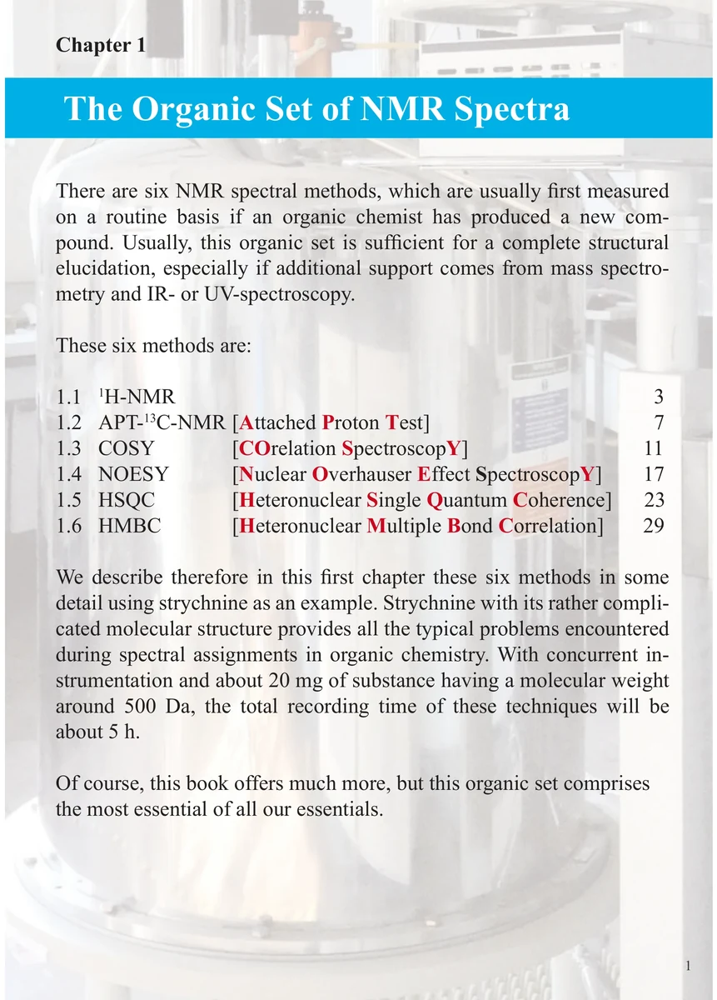
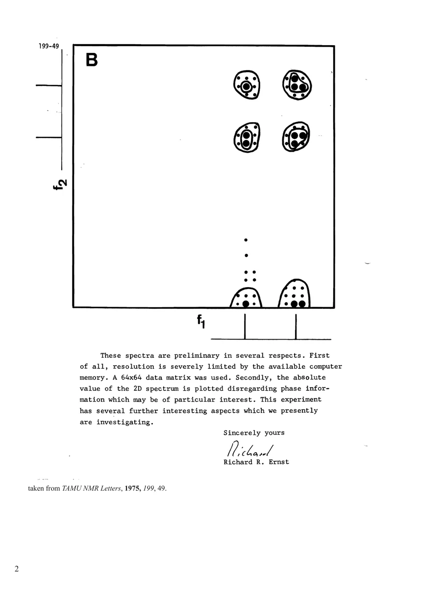

Chapter 1
The Organic Set of NMR Spectra
有机化合物 NMR 谱图组合
PDF 11–12 · 原书 1–2 · The Organic Set of NMR Spectra


核磁共振实验方法、脉冲序列与谱图实践
Chapter 1
有机化合物 NMR 谱图组合
PDF 11–12 · 原书 1–2 · The Organic Set of NMR Spectra

